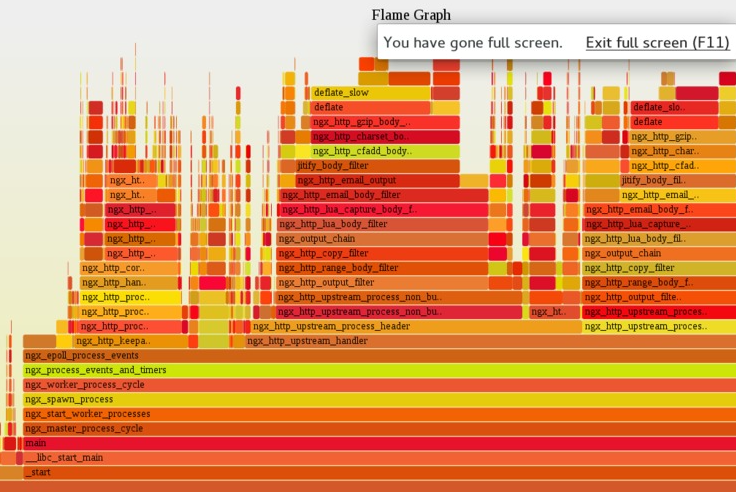

- 00 开篇词 OpenResty，为你打开高性能开发的大门.md
- 01 初探OpenResty的三大特性.md
- 02 如何写出你的“hello world”？.md
- 03 揪出隐藏在背后的那些子项目.md
- 04 如何管理第三方包？从包管理工具luarocks和opm说起.md
- 05 [视频]opm项目导读.md
- 06 OpenResty 中用到的 NGINX 知识.md
- 07 带你快速上手 Lua.md
- 08 LuaJIT分支和标准Lua有什么不同？.md
- 09 为什么 lua-resty-core 性能更高一些？.md
- 10 JIT编译器的死穴：为什么要避免使用 NYI ？.md
- 11 剖析Lua唯一的数据结构table和metatable特性.md
- 12 高手秘诀：识别Lua的独有概念和坑.md
- 13 [视频]实战：基于FFI实现的lua-resty-lrucache.md
- 14 答疑（一）：Lua 规则和 NGINX 配置文件产生冲突怎么办？.md
- 15 OpenResty 和别的开发平台有什么不同？.md
- 16 秒杀大多数开发问题的两个利器：文档和测试案例.md
- 17 为什么能成为更好的Web服务器？动态处理请求和响应是关键.md
- 18 worker间的通信法宝：最重要的数据结构之shared dict.md
- 19 OpenResty 的核心和精髓：cosocket.md
- 20 超越 Web 服务器：特权进程和定时任务.md
- 21 带你玩转时间、正则表达式等常用API.md
- 22 [视频]从一个安全漏洞说起，探寻API性能和安全的平衡.md
- 23 [视频]导读lua-resty-requests：优秀的lua-resty-_是如何编写的？.md
- 24 实战：处理四层流量，实现Memcached Server.md
- 25 答疑（二）：特权进程的权限到底是什么？.md
- 26 代码贡献者的拦路虎：test__nginx 简介.md
- 27 test__nginx 包罗万象的测试方法.md
- 28 test__nginx 还可以这样用？.md
- 29 最容易失准的性能测试？你需要压测工具界的“悍马”wrk.md
- 30 答疑（三）如何搭建测试的网络结构？.md
- 31 性能下降10倍的真凶：阻塞函数.md
- 32 让人又恨又爱的字符串操作.md
- 33 性能提升10倍的秘诀：必须用好 table.md
- 34 特别放送：OpenResty编码指南.md
- 35 [视频]实际项目中的性能优化：ingress-nginx中的几个PR解读.md
- 36 盘点OpenResty的各种调试手段.md
- 37 systemtap-toolkit和stapxx：如何用数据搞定“疑难杂症”？.md
- 38 [视频]巧用wrk和火焰图，科学定位性能瓶颈.md
- 39 高性能的关键：shared dict 缓存和 lru 缓存.md
- 40 缓存与风暴并存，谁说缓存风暴不可避免？.md
- 41 lua-resty-_ 封装，让你远离多级缓存之痛.md
- 42 如何应对突发流量：漏桶和令牌桶的概念.md
- 43 灵活实现动态限流限速，其实没有那么难.md
- 44 OpenResty 的杀手锏：动态.md
- 45 不得不提的能力外延：OpenResty常用的第三方库.md
- 46 答疑（四）：共享字典的缓存是必须的吗？.md
- 47 微服务API网关搭建三步曲（一）.md
- 48 微服务API网关搭建三步曲（二）.md
- 49 微服务API网关搭建三步曲（三）.md
- 50 答疑（五）：如何在工作中引入 OpenResty？.md
- 结束语 行百里者半九十.md
03 揪出隐藏在背后的那些子项目
你好，我是温铭。
我们先来揭晓上一节最后留下的思考题，如何把 Lua 代码从 nginx.conf 里面抽取出来，保持代码的可读性和可维护性呢？
操作其实很简单。
我们先在 geektime 的工作目录下，创建一个名为 lua 的目录，专门用来存放代码：
$ mkdir lua
$ cat lua/hello.lua
ngx.say("hello, world")
然后修改 nginx.conf 的配置，把 content_by_lua_block 改为 content_by_lua_file：
pid logs/nginx.pid;
events {
worker_connections 1024;
}
http {
server {
listen 8080;
location / {
content_by_lua_file lua/hello.lua;
}
}
}
最后，重启 OpenResty 的服务就可以了：
$ sudo kill -HUP `cat logs/nginx.pid`
你可以使用 curl ，验证是否返回了预期的结果。至于后面 Lua 代码的变更，你就可以直接修改 hello.lua 这个文件，而不是 nginx.conf 了。
其实，在上面这个小例子里面，也有几个有趣的地方：
content_by_lua_file lua/hello.lua; 里面写的是相对路径，那么 OpenResty 是如何找到这个 Lua 文件的？
Lua 代码内容的变更，需要重启 OpenResty 服务才会生效，这样显然不方便调试，那么有没有什么即时生效的方法呢？
如何把 lua 代码所在的文件夹，加入到 OpenResty 的查找路径中呢？
这几个问题，我鼓励你先自己思考一下，它们都可以在官方文档里面找到答案。这也是为什么，我一直强调文档的重要性。
接下来我们一起来解答。先看第一个问题。如果原本给出的是相对路径，那么 OpenResty 在启动时，会把 OpenResty 启动的命令行参数中的 -p PATH 作为前缀，将相对路径拼接为绝对路径。这样，自然就可以顺利找到Lua 文件。
再来看第二个问题。Lua 代码在第一个请求时会被加载，并默认缓存起来。所以在你每次修改 Lua 源文件后，都必须重新加载 OpenResty 才会生效。其实，在 nginx.conf 中关闭 lua_code_cache 就能避免重新加载，这一点你可以自己试试看。不过，特别需要注意的是，这种方法只能临时用于开发和调试，如果是线上部署，一定要记得打开缓存，否则会非常影响性能。
最后一个问题，OpenResty 提供了 lua_package_path 指令，可以设置 Lua 模块的查找路径。针对上面的例子，我们可以把 lua_package_path 设置为 $prefix/lua/?.lua;;，其中，
$prefix就是启动参数中的 -p PATH；/lua/?.lua表示 lua 目录下所有以 .lua 作为后缀的文件；最后的两个分号，则代表内置的代码搜索路径。
OpenResty 安装后的目录结构
了解完第一个 hello world 程序后，我们继续追根究底，来看下 OpenResty 自身安装完成后，它的目录结构是怎样的，以及里面包含哪些文件。
我们先通过 -V 选项，查看 OpenResty 安装到了哪一个目录。下面的这个结果，我省略了很多模块的编译参数，这些我们稍后再来补上：
$ openresty -V
nginx version: openresty/1.13.6.2
built by clang 10.0.0 (clang-1000.10.44.4)
built with OpenSSL 1.1.0h 27 Mar 2018
TLS SNI support enabled
configure arguments: --prefix=/usr/local/Cellar/openresty/1.13.6.2/nginx ...
我本地是通过 brew 安装的，所以目录是/usr/local/Cellar/openresty/1.13.6.2/nginx ，和你的本地环境很可能不同。这其中主要包含了 bin、luajit、lualib、nginx、pod 这几个子目录。理解这几个文件夹的含义很重要，可以帮我们更好地学习 OpenResty。接下来，我们逐个来看一下。
首先是最重要的 bin 目录：
$ ll /usr/local/Cellar/openresty/1.13.6.2/bin
total 320
-r-xr-xr-x 1 ming admin 19K 3 27 12:54 md2pod.pl
-r-xr-xr-x 1 ming admin 15K 3 27 12:54 nginx-xml2pod
lrwxr-xr-x 1 ming admin 19B 3 27 12:54 openresty -> ../nginx/sbin/nginx
-r-xr-xr-x 1 ming admin 62K 3 27 12:54 opm
-r-xr-xr-x 1 ming admin 29K 3 27 12:54 resty
-r-xr-xr-x 1 ming admin 15K 3 27 12:54 restydoc
-r-xr-xr-x 1 ming admin 8.3K 3 27 12:54 restydoc-index
这里面既有我们上一节中提到的 OpenResty CLI resty，也有最核心的可执行文件 openresty，它其实是 nginx 的一个软链接。至于目录里面其他的一些工具，没有任何悬念，它们和 resty 一样，都是 Perl 脚本。
在这其中，opm 是包管理工具，可以通过它来管理各类第三方包，后面会有一节内容专门来讲；而 restydoc，则是我们第一节提到过的“老朋友”了，它是 OpenResty 提供的文档查看工具，你可以通过它来查看 OpenResty 和 NGINX 的使用文档：
$ restydoc -s ngx.say
$ restydoc -s proxy_pass
这段代码中的两个例子，分别查询了 OpenResty 的 API 和 NGINX 的指令。restydoc 这个工具，对服务端工程师的专注开发有很大帮助。
浏览完了 bin 目录，我们接着看下 pod 目录。先强调一点，这里的“pod”，和 k8s 里“pod”的概念完全没有关系。pod 是 Perl 里面的一种标记语言，用于给 Perl 的模块编写文档。pod 目录中存放的就是 OpenResty、 NGINX、lua-resty-*、LuaJIT 的文档， 这些就和刚才提到的 restydoc 联系在一起了。
接下来是熟悉的 nginx 和 luajit 这两个目录。这两个很好理解，主要存放 NGINX 和 LuaJIT 的可执行文件和依赖，是 OpenResty 的基石。很多人说 OpenResty 基于 Lua，这个说法其实并不准确，从上面我们可以看出， OpenResty 其实是基于 LuaJIT的。
事实上，早期的 OpenResty 同时带有 Lua 和 LuaJIT，你可以通过编译选项，来决定使用 Lua 还是 LuaJIT。不过到了现在，Lua逐渐被淘汰，就只支持更高性能的 LuaJIT了。
最后，我们看下 lualib 目录。它里面存放的是 OpenResty 中使用到的 Lua 库，主要分为 ngx 和 resty 两个子目录。
前者存放的是 lua-resty-core 这个官方项目中的 Lua 代码，里面都是基于 FFI 重新实现的 OpenResty API，后面我会用专门的文章来解释为什么要重新实现，这里你有个大概印象即可，不必深究。
而 resty 目录中存放的则是各种 lua-resty-* 项目包含的 Lua 代码，接下来我们会接触到。
按照我讲课的惯例，到这一步我会给出这些目录源头的出处。这也是开源项目的乐趣之一，如果你喜欢打破砂锅问到底，那你总发现更多好玩的东西。
下面是 OpenResty 在 CentOS 中的打包脚本，里面包含了上面提到的所有目录，你可以自己了解一下。
%files
%defattr(-,root,root,-)
/etc/init.d/%{name}
/usr/bin/%{name}
%{orprefix}/bin/openresty
%{orprefix}/site/lualib/
%{orprefix}/luajit/*
%{orprefix}/lualib/*
%{orprefix}/nginx/html/*
%{orprefix}/nginx/logs/
%{orprefix}/nginx/sbin/*
%{orprefix}/nginx/tapset/*
%config(noreplace) %{orprefix}/nginx/conf/*
%{orprefix}/COPYRIGHT
OpenResty 项目概览
提到 OpenResty，你应该会想到 lua-nginx-module。没错，这个 NGINX 的 C 模块确实是 OpenResty 的核心，但它并不等价于 OpenResty。很多工程师都会把 OpenResty 叫做 ngx lua，有不少技术大会的分享和出版的书籍中也是用的这个叫法，这其实是不严谨的，也是 OpenResty 社区不提倡的。
下面我来讲讲为什么，以及 OpenResty 中除了 lua-nginx-module ，还有哪些其他的关联项目。
打开 OpenResty 在 GitHub 的 项目主页，你可以看到 OpenResty 包含了 68 个公开的项目，大概分为以下 7 类, 下面我来分别简单介绍下，让你有个初步的印象，这样你后面学习起来也轻松一些。
NGINX C 模块
OpenResty 的项目命名都是有规范的，以 *-nginx-module命名的就是 NGINX 的 C 模块。
OpenResty 中一共包含了 20 多个 C 模块，我们在本节最开始使用的openresty -V 中，也可以看到这些 C 模块：
$ openresty -V
nginx version: openresty/1.13.6.2
built by clang 10.0.0 (clang-1000.10.44.4)
built with OpenSSL 1.1.0h 27 Mar 2018
TLS SNI support enabled
configure arguments: --prefix=/usr/local/Cellar/openresty/1.13.6.2/nginx --with-cc-opt='-O2 -I/usr/local/include -I/usr/local/opt/pcre/include -I/usr/local/opt/openresty-openssl/include' --add-module=../ngx_devel_kit-0.3.0 --add-module=../echo-nginx-module-0.61 --add-module=../xss-nginx-module-0.06 --add-module=../ngx_coolkit-0.2rc3 --add-module=../set-misc-nginx-module-0.32 --add-module=../form-input-nginx-module-0.12 --add-module=../encrypted-session-nginx-module-0.08 --add-module=../srcache-nginx-module-0.31 --add-module=../ngx_lua-0.10.13 --add-module=../ngx_lua_upstream-0.07 --add-module=../headers-more-nginx-module-0.33 --add-module=../array-var-nginx-module-0.05 --add-module=../memc-nginx-module-0.19 --add-module=../redis2-nginx-module-0.15 --add-module=../redis-nginx-module-0.3.7 --add-module=../ngx_stream_lua-0.0.5 --with-ld-opt='-Wl,-rpath,/usr/local/Cellar/openresty/1.13.6.2/luajit/lib -L/usr/local/lib -L/usr/local/opt/pcre/lib -L/usr/local/opt/openresty-openssl/lib' --pid-path=/usr/local/var/run/openresty.pid --lock-path=/usr/local/var/run/openresty.lock --conf-path=/usr/local/etc/openresty/nginx.conf --http-log-path=/usr/local/var/log/nginx/access.log --error-log-path=/usr/local/var/log/nginx/error.log --with-pcre-jit --with-ipv6 --with-stream --with-stream_ssl_module --with-stream_ssl_preread_module --with-http_v2_module --without-mail_pop3_module --without-mail_imap_module --without-mail_smtp_module --with-http_stub_status_module --with-http_realip_module --with-http_addition_module --with-http_auth_request_module --with-http_secure_link_module --with-http_random_index_module --with-http_geoip_module --with-http_gzip_static_module --with-http_sub_module --with-http_dav_module --with-http_flv_module --with-http_mp4_module --with-http_gunzip_module --with-threads --with-dtrace-probes --with-stream --with-stream_ssl_module --with-http_ssl_module
这里--add-module=后面跟着的，就是 OpenResty 的 C 模块。其中，最核心的就是 lua-nginx-module 和 stream-lua-nginx-module，前者用来处理七层流量，后者用来处理四层流量。
这些 C 模块中，有些是需要特别注意的，虽然默认编译进入了 OpenResty，但并不推荐使用。 比如 redis2-nginx-module、redis-nginx-module 和 memc-nginx-module，它们是用来和 redis以及memcached 交互使用的。这些 C 库是 OpenResty 早期推荐使用的，但在 cosocket 功能加入之后，它们都已经被 lua-resty-redis 和 lua-resty-memcached 替代，处于疏于维护的状态。
OpenResty 后面也不会开发更多的 NGINX C 库，而是专注在基于 cosocket 的 Lua 库上，后者才是未来。
lua-resty-周边库
OpenResty 官方仓库中包含 18 个 lua-resty-* 库，涵盖 Redis、MySQL、memcached、websocket、dns、流量控制、字符串处理、进程内缓存等常用库。除了官方自带的之外，还有更多的第三方库。它们非常重要，所以下一章节，我们会花更多的篇幅来专门介绍这些周边库。
自己维护的 LuaJIT 分支
OpenResty 除了维护自己的 OpenSSL patch 外，还维护了自己的 LuaJIT 分支。在 2015 年，LuaJIT 的作者 Mike Pall 宣布退休，寻找新的 LuaJIT 维护者，但 Mike 并没有找到合适的维护者，他现在主要是做 bugfix 的维护工作，新功能的开发也已经暂停，所以 OpenResty 维护着自己的 LuaJIT 分支。
相对于 Lua，LuaJIT 增加了不少独有的函数，这些函数非常重要，但知道的工程师并不多，算是_半隐藏技能_，后面我也会专门介绍。
测试框架
OpenResty 的测试框架是test-nginx，同样也是用 Perl 语言来开发的，从名字上就能看出来，它是专门用来测试 NGINX 相关的项目。OpenResty 官方的所有 C 模块和 lua-resty 库的测试案例，都是由 test-nginx 驱动的。
这个框架和常见的基于断言的框架不同，是一套更强大和独立的系统，我们后面会花几节课来专门学习。
事实上，有些 OpenResty 的代码贡献者也没有搞清楚这个测试框架，有时候提交的 PR 中包含了不少复杂的 C 和 Lua 代码，但对编写对应的测试案例一事，还是经常发怵。所以，如果你已经查看过一些 OpenResty 项目中/t目录里面的测试案例，却仍然一头雾水，先别急着怀疑自己，大部分人都是一样的。
除了 test-nginx 之外，mockeagain 这个项目可以模拟慢速的网络，让程序每次只读写一个字节。对于 web 服务器来说，这是一个很有用的工具。
调试工具链
OpenResty 项目在如何科学和动态地调试代码上，花费了大量的精力，可以说是达到了极致。OpenResty 的作者章亦春专门写了一篇文章，来介绍动态追踪技术。我强烈推荐给你，看完也有助于理解对应的工具链。
openresty-systemtap-toolkit 和 stapxx 这两个 OpenResty 的项目，都基于 systemtap 这个动态调试和追踪工具。使用 systemtap 最大的优势，便是实现活体分析，同时对目标程序完全无侵入。
打个比方，systemtap，就像是我们去医院照了个 CT，无痛无感知。更棒的是，systemtap 可以生成直观的火焰图来做性能分析，后面我也会专门介绍，这里先放一个火焰图，让你直观上有个感性的认识：

打包相关
OpenResty 在不同发行操作系统（比如 CentOS、Ubuntu、MacOS 等）版本中的打包脚本，出于更细可控力度的目的，都是手工编写的。我们在介绍安装后目录结构的时候，就已经涉及到了这些打包相关的项目：openresty-packaging 和 home-brew。如果你对此有兴趣，可以自行学习，这里我就不再赘述了。
工程化工具
除了上面这些比较大块儿的项目之外，OpenResty 还有一些负责工程化的工具，大都也是“深藏闺中”。
比如 openresty-devel-utils 就是开发 OpenResty 和 NGINX 的工具集。它们也都使用 Perl 开发，其中大部分的工具都是没有文档的。但对于 OpenResty 的开发者来说，这些工具又是非常有用的。
这里我先挑几个简单介绍一下。
lj-releng 是一个简单有效的 LuaJIT 代码检测工具，类似 luacheck，可以找出全局变量等潜在的问题。
reindex 从名字来看是重建索引的意思，它其实是格式化 test-nginx 测试案例的工具，可以重新排列测试案例的编号，以及去除多余的空白符。reindex 可以说是 OpenResty 开发者每天都会用到的工具之一。
opsboy 也是一个深藏不露的项目，主要用于自动化部署。OpenResty 每次发布版本前，都会在 AWS EC2 集群上做完整的回归测试，详细的文档你可以参考官方文档，而这个回归测试正是由 opsboy 来部署和驱动的。
opsboy 是一个用 Perl 实现的 DSL（领域特定语言）。实际上， OpenResty 的作者非常喜欢创造各种不同的 DSL 来解决问题。
写在最后
今天，我们主要学习了OpenResty 安装后的目录结构，以及背后的一些子项目。希望你学完今天的内容后，能够了解更多 OpenResty 的项目。OpenResty 已经远远超出了 NGINX 负载均衡和反向代理的范畴，实现了自己的生态，下一次我们会详细聊聊这方面。
对于今天的内容，你有哪些疑惑和问题吗？欢迎留言和我分享，也欢迎你把这篇文章转发给你的同事、朋友，一起学习高效开发。
© 2019 - 2023 Liangliang Lee. Powered by gin and hexo-theme-book.